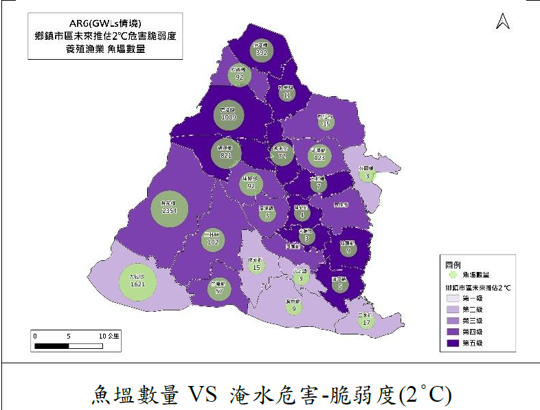
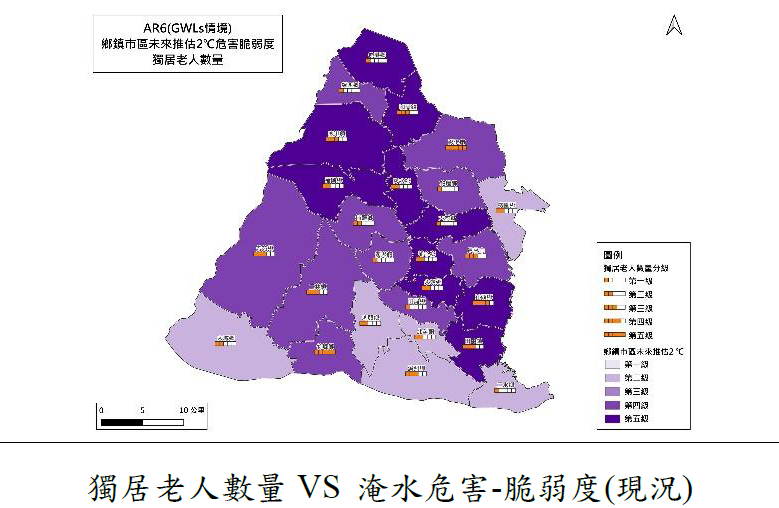

👴 高齡脆弱熱區：誰最需要氣候保護？
將「獨居老人數量」與「第三型照護案場」套疊在淹水危害脆弱度圖上，揭示氣候風險下的照護缺口。
🔀 情境比較：現況 → 升溫 2°C

📍 現況 🌡️ 升溫 2°C
獨居老人 VS 淹水危害脆弱度（現況）
目前彰化市、鹿港、員林等人口密集區已處於中高風險。圖中點位顯示獨居老人高度集中於這些脆弱區域。
現況基準鄉鎮尺度獨居老人 VS 淹水危害脆弱度（升溫 2°C）
升溫 2°C 情境下，中部鄉鎮風險顯著跳升至第 4-5 級。這是目前全球減碳路徑下最可能的衝擊情境。
2°C 情境風險擴張
獨居老人 VS 淹水危害脆弱度（極端 4°C）
極端升溫情境下，全縣幾乎全面進入最高風險等級。圖資顯示即便是不易淹水的區域，其脆弱度也大幅上升。
極端情境4°C
精細定位：獨居老人 × 5km 網格分析
透過更高空間解析度的網格分析，我們可以鎖定村里層級的「具體街道」進行優先佈防。
5km 網格精準治理